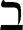
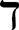
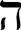
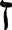
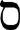
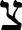
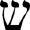
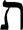

1Praise the LORD, my soul.
LORD my God, you are very great; you are clothed with splendor and majesty.
2The LORD wraps himself in light as with a garment; he stretches out the heavens like a tent
3and lays the beams of his upper chambers on their waters.
He makes the clouds his chariot and rides on the wings of the wind.
4He makes winds his messengers,[253] flames of fire his servants.
5He set the earth on its foundations; it can never be moved.
6You covered it with the watery depths as with a garment; the waters stood above the mountains.
7But at your rebuke the waters fled, at the sound of your thunder they took to flight;
8they flowed over the mountains, they went down into the valleys, to the place you assigned for them.
9You set a boundary they cannot cross; never again will they cover the earth.
10He makes springs pour water into the ravines; it flows between the mountains.
11They give water to all the beasts of the field; the wild donkeys quench their thirst.
12The birds of the sky nest by the waters; they sing among the branches.
13He waters the mountains from his upper chambers; the land is satisfied by the fruit of his work.
14He makes grass grow for the cattle, and plants for people to cultivate—bringing forth food from the earth:
15wine that gladdens human hearts, oil to make their faces shine, and bread that sustains their hearts.
16The trees of the LORD are well watered, the cedars of Lebanon that he planted.
17There the birds make their nests; the stork has its home in the junipers.
18The high mountains belong to the wild goats; the crags are a refuge for the hyrax.
19He made the moon to mark the seasons, and the sun knows when to go down.
20You bring darkness, it becomes night, and all the beasts of the forest prowl.
21The lions roar for their prey and seek their food from God.
22The sun rises, and they steal away; they return and lie down in their dens.
23Then people go out to their work, to their labor until evening.
24How many are your works, LORD!
In wisdom you made them all; the earth is full of your creatures.
25There is the sea, vast and spacious, teeming with creatures beyond number—living things both large and small.
26There the ships go to and fro, and Leviathan, which you formed to frolic there.
27All creatures look to you to give them their food at the proper time.
28When you give it to them, they gather it up; when you open your hand, they are satisfied with good things.
29When you hide your face, they are terrified; when you take away their breath, they die and return to the dust.
30When you send your Spirit, they are created, and you renew the face of the ground.
31May the glory of the LORD endure forever; may the LORD rejoice in his works—
32he who looks at the earth, and it trembles, who touches the mountains, and they smoke.
33I will sing to the LORD all my life;
I will sing praise to my God as long as I live.
34May my meditation be pleasing to him, as I rejoice in the LORD.
35But may sinners vanish from the earth and the wicked be no more.
Praise the LORD, my soul.
Praise the LORD.[254]
1Give praise to the LORD, proclaim his name; make known among the nations what he has done.
2Sing to him, sing praise to him; tell of all his wonderful acts.
3Glory in his holy name; let the hearts of those who seek the LORD rejoice.
4Look to the LORD and his strength; seek his face always.
5Remember the wonders he has done, his miracles, and the judgments he pronounced,
6you his servants, the descendants of Abraham, his chosen ones, the children of Jacob.
7He is the LORD our God; his judgments are in all the earth.
8He remembers his covenant forever, the promise he made, for a thousand generations,
9the covenant he made with Abraham, the oath he swore to Isaac.
10He confirmed it to Jacob as a decree, to Israel as an everlasting covenant:
11“To you I will give the land of Canaan as the portion you will inherit.”
12When they were but few in number, few indeed, and strangers in it,
13they wandered from nation to nation, from one kingdom to another.
14He allowed no one to oppress them; for their sake he rebuked kings:
15“Do not touch my anointed ones; do my prophets no harm.”
16He called down famine on the land and destroyed all their supplies of food;
17and he sent a man before them—
Joseph, sold as a slave.
18They bruised his feet with shackles, his neck was put in irons,
19till what he foretold came to pass, till the word of the LORD proved him true.
20The king sent and released him, the ruler of peoples set him free.
21He made him master of his household, ruler over all he possessed,
22to instruct his princes as he pleased and teach his elders wisdom.
23Then Israel entered Egypt;
Jacob resided as a foreigner in the land of Ham.
24The LORD made his people very fruitful; he made them too numerous for their foes,
25whose hearts he turned to hate his people, to conspire against his servants.
26He sent Moses his servant, and Aaron, whom he had chosen.
27They performed his signs among them, his wonders in the land of Ham.
28He sent darkness and made the land dark—for had they not rebelled against his words?
29He turned their waters into blood, causing their fish to die.
30Their land teemed with frogs, which went up into the bedrooms of their rulers.
31He spoke, and there came swarms of flies, and gnats throughout their country.
32He turned their rain into hail, with lightning throughout their land;
33he struck down their vines and fig trees and shattered the trees of their country.
34He spoke, and the locusts came, grasshoppers without number;
35they ate up every green thing in their land, ate up the produce of their soil.
36Then he struck down all the firstborn in their land, the firstfruits of all their manhood.
37He brought out Israel, laden with silver and gold, and from among their tribes no one faltered.
38Egypt was glad when they left, because dread of Israel had fallen on them.
39He spread out a cloud as a covering, and a fire to give light at night.
40They asked, and he brought them quail; he fed them well with the bread of heaven.
41He opened the rock, and water gushed out; it flowed like a river in the desert.
42For he remembered his holy promise given to his servant Abraham.
43He brought out his people with rejoicing, his chosen ones with shouts of joy;
44he gave them the lands of the nations, and they fell heir to what others had toiled for—
45that they might keep his precepts and observe his laws.
Praise the LORD.[255]
1Praise the LORD.[256]
Give thanks to the LORD, for he is good; his love endures forever.
2Who can proclaim the mighty acts of the LORD or fully declare his praise?
3Blessed are those who act justly, who always do what is right.
4Remember me, LORD, when you show favor to your people, come to my aid when you save them,
5that I may enjoy the prosperity of your chosen ones, that I may share in the joy of your nation and join your inheritance in giving praise.
6We have sinned, even as our ancestors did; we have done wrong and acted wickedly.
7When our ancestors were in Egypt, they gave no thought to your miracles; they did not remember your many kindnesses, and they rebelled by the sea, the Red Sea.[257]
8Yet he saved them for his name’s sake, to make his mighty power known.
9He rebuked the Red Sea, and it dried up; he led them through the depths as through a desert.
10He saved them from the hand of the foe; from the hand of the enemy he redeemed them.
11The waters covered their adversaries; not one of them survived.
12Then they believed his promises and sang his praise.
13But they soon forgot what he had done and did not wait for his plan to unfold.
14In the desert they gave in to their craving; in the wilderness they put God to the test.
15So he gave them what they asked for, but sent a wasting disease among them.
16In the camp they grew envious of Moses and of Aaron, who was consecrated to the LORD.
17The earth opened up and swallowed Dathan; it buried the company of Abiram.
18Fire blazed among their followers; a flame consumed the wicked.
19At Horeb they made a calf and worshiped an idol cast from metal.
20They exchanged their glorious God for an image of a bull, which eats grass.
21They forgot the God who saved them, who had done great things in Egypt,
22miracles in the land of Ham and awesome deeds by the Red Sea.
23So he said he would destroy them—had not Moses, his chosen one, stood in the breach before him to keep his wrath from destroying them.
24Then they despised the pleasant land; they did not believe his promise.
25They grumbled in their tents and did not obey the LORD.
26So he swore to them with uplifted hand that he would make them fall in the wilderness,
27make their descendants fall among the nations and scatter them throughout the lands.
28They yoked themselves to the Baal of Peor and ate sacrifices offered to lifeless gods;
29they aroused the LORD’s anger by their wicked deeds, and a plague broke out among them.
30But Phinehas stood up and intervened, and the plague was checked.
31This was credited to him as righteousness for endless generations to come.
32By the waters of Meribah they angered the LORD, and trouble came to Moses because of them;
33for they rebelled against the Spirit of God, and rash words came from Moses’ lips.[258]
34They did not destroy the peoples as the LORD had commanded them,
35but they mingled with the nations and adopted their customs.
36They worshiped their idols, which became a snare to them.
37They sacrificed their sons and their daughters to false gods.
38They shed innocent blood, the blood of their sons and daughters, whom they sacrificed to the idols of Canaan, and the land was desecrated by their blood.
39They defiled themselves by what they did; by their deeds they prostituted themselves.
40Therefore the LORD was angry with his people and abhorred his inheritance.
41He gave them into the hands of the nations, and their foes ruled over them.
42Their enemies oppressed them and subjected them to their power.
43Many times he delivered them, but they were bent on rebellion and they wasted away in their sin.
44Yet he took note of their distress when he heard their cry;
45for their sake he remembered his covenant and out of his great love he relented.
46He caused all who held them captive to show them mercy.
47Save us, LORD our God, and gather us from the nations, that we may give thanks to your holy name and glory in your praise.
48Praise be to the LORD, the God of Israel, from everlasting to everlasting.
Let all the people say, “Amen!”
Praise the LORD.
1Give thanks to the LORD, for he is good; his love endures forever.
2Let the redeemed of the LORD tell their story—those he redeemed from the hand of the foe,
3those he gathered from the lands, from east and west, from north and south.[259]
4Some wandered in desert wastelands, finding no way to a city where they could settle.
5They were hungry and thirsty, and their lives ebbed away.
6Then they cried out to the LORD in their trouble, and he delivered them from their distress.
7He led them by a straight way to a city where they could settle.
8Let them give thanks to the LORD for his unfailing love and his wonderful deeds for mankind,
9for he satisfies the thirsty and fills the hungry with good things.
10Some sat in darkness, in utter darkness, prisoners suffering in iron chains,
11because they rebelled against God’s commands and despised the plans of the Most High.
12So he subjected them to bitter labor; they stumbled, and there was no one to help.
13Then they cried to the LORD in their trouble, and he saved them from their distress.
14He brought them out of darkness, the utter darkness, and broke away their chains.
15Let them give thanks to the LORD for his unfailing love and his wonderful deeds for mankind,
16for he breaks down gates of bronze and cuts through bars of iron.
17Some became fools through their rebellious ways and suffered affliction because of their iniquities.
18They loathed all food and drew near the gates of death.
19Then they cried to the LORD in their trouble, and he saved them from their distress.
20He sent out his word and healed them; he rescued them from the grave.
21Let them give thanks to the LORD for his unfailing love and his wonderful deeds for mankind.
22Let them sacrifice thank offerings and tell of his works with songs of joy.
23Some went out on the sea in ships; they were merchants on the mighty waters.
24They saw the works of the LORD, his wonderful deeds in the deep.
25For he spoke and stirred up a tempest that lifted high the waves.
26They mounted up to the heavens and went down to the depths; in their peril their courage melted away.
27They reeled and staggered like drunkards; they were at their wits’ end.
28Then they cried out to the LORD in their trouble, and he brought them out of their distress.
29He stilled the storm to a whisper; the waves of the sea[260] were hushed.
30They were glad when it grew calm, and he guided them to their desired haven.
31Let them give thanks to the LORD for his unfailing love and his wonderful deeds for mankind.
32Let them exalt him in the assembly of the people and praise him in the council of the elders.
33He turned rivers into a desert, flowing springs into thirsty ground,
34and fruitful land into a salt waste, because of the wickedness of those who lived there.
35He turned the desert into pools of water and the parched ground into flowing springs;
36there he brought the hungry to live, and they founded a city where they could settle.
37They sowed fields and planted vineyards that yielded a fruitful harvest;
38he blessed them, and their numbers greatly increased, and he did not let their herds diminish.
39Then their numbers decreased, and they were humbled by oppression, calamity and sorrow;
40he who pours contempt on nobles made them wander in a trackless waste.
41But he lifted the needy out of their affliction and increased their families like flocks.
42The upright see and rejoice, but all the wicked shut their mouths.
43Let the one who is wise heed these things and ponder the loving deeds of the LORD.
 Aleph
Aleph
1Blessed are those whose ways are blameless, who walk according to the law of the LORD.
2Blessed are those who keep his statutes and seek him with all their heart—
3they do no wrong but follow his ways.
4You have laid down precepts that are to be fully obeyed.
5Oh, that my ways were steadfast in obeying your decrees!
6Then I would not be put to shame when I consider all your commands.
7I will praise you with an upright heart as I learn your righteous laws.
8I will obey your decrees; do not utterly forsake me.
 Beth
9How can a young person stay on the path of purity?
By living according to your word.
10I seek you with all my heart; do not let me stray from your commands.
11I have hidden your word in my heart that I might not sin against you.
12Praise be to you, LORD; teach me your decrees.
13With my lips I recount all the laws that come from your mouth.
14I rejoice in following your statutes as one rejoices in great riches.
15I meditate on your precepts and consider your ways.
16I delight in your decrees;
I will not neglect your word.
Gimel
17Be good to your servant while I live, that I may obey your word.
18Open my eyes that I may see wonderful things in your law.
19I am a stranger on earth; do not hide your commands from me.
20My soul is consumed with longing for your laws at all times.
21You rebuke the arrogant, who are accursed, those who stray from your commands.
22Remove from me their scorn and contempt, for I keep your statutes.
23Though rulers sit together and slander me, your servant will meditate on your decrees.
24Your statutes are my delight; they are my counselors.
 Daleth
25I am laid low in the dust; preserve my life according to your word.
26I gave an account of my ways and you answered me; teach me your decrees.
27Cause me to understand the way of your precepts, that I may meditate on your wonderful deeds.
28My soul is weary with sorrow; strengthen me according to your word.
29Keep me from deceitful ways; be gracious to me and teach me your law.
30I have chosen the way of faithfulness;
I have set my heart on your laws.
31I hold fast to your statutes, LORD; do not let me be put to shame.
32I run in the path of your commands, for you have broadened my understanding.
 He
33Teach me, LORD, the way of your decrees, that I may follow it to the end.[280]
34Give me understanding, so that I may keep your law and obey it with all my heart.
35Direct me in the path of your commands, for there I find delight.
36Turn my heart toward your statutes and not toward selfish gain.
37Turn my eyes away from worthless things; preserve my life according to your word.[281]
38Fulfill your promise to your servant, so that you may be feared.
39Take away the disgrace I dread, for your laws are good.
40How I long for your precepts!
In your righteousness preserve my life.
Waw
41May your unfailing love come to me, LORD, your salvation, according to your promise;
42then I can answer anyone who taunts me, for I trust in your word.
43Never take your word of truth from my mouth, for I have put my hope in your laws.
44I will always obey your law, for ever and ever.
45I will walk about in freedom, for I have sought out your precepts.
46I will speak of your statutes before kings and will not be put to shame,
47for I delight in your commands because I love them.
48I reach out for your commands, which I love, that I may meditate on your decrees.
 Zayin
49Remember your word to your servant, for you have given me hope.
50My comfort in my suffering is this:
Your promise preserves my life.
51The arrogant mock me unmercifully, but I do not turn from your law.
52I remember, LORD, your ancient laws, and I find comfort in them.
53Indignation grips me because of the wicked, who have forsaken your law.
54Your decrees are the theme of my song wherever I lodge.
55In the night, LORD, I remember your name, that I may keep your law.
56This has been my practice:
I obey your precepts.
Heth
57You are my portion, LORD;
I have promised to obey your words.
58I have sought your face with all my heart; be gracious to me according to your promise.
59I have considered my ways and have turned my steps to your statutes.
60I will hasten and not delay to obey your commands.
61Though the wicked bind me with ropes,
I will not forget your law.
62At midnight I rise to give you thanks for your righteous laws.
63I am a friend to all who fear you, to all who follow your precepts.
64The earth is filled with your love, LORD; teach me your decrees.
Teth
65Do good to your servant according to your word, LORD.
66Teach me knowledge and good judgment, for I trust your commands.
67Before I was afflicted I went astray, but now I obey your word.
68You are good, and what you do is good; teach me your decrees.
69Though the arrogant have smeared me with lies,
I keep your precepts with all my heart.
70Their hearts are callous and unfeeling, but I delight in your law.
71It was good for me to be afflicted so that I might learn your decrees.
72The law from your mouth is more precious to me than thousands of pieces of silver and gold.
Yodh
73Your hands made me and formed me; give me understanding to learn your commands.
74May those who fear you rejoice when they see me, for I have put my hope in your word.
75I know, LORD, that your laws are righteous, and that in faithfulness you have afflicted me.
76May your unfailing love be my comfort, according to your promise to your servant.
77Let your compassion come to me that I may live, for your law is my delight.
78May the arrogant be put to shame for wronging me without cause; but I will meditate on your precepts.
79May those who fear you turn to me, those who understand your statutes.
80May I wholeheartedly follow your decrees, that I may not be put to shame.
 Kaph
Kaph
81My soul faints with longing for your salvation, but I have put my hope in your word.
82My eyes fail, looking for your promise;
I say, “When will you comfort me?”
83Though I am like a wineskin in the smoke,
I do not forget your decrees.
84How long must your servant wait?
When will you punish my persecutors?
85The arrogant dig pits to trap me, contrary to your law.
86All your commands are trustworthy; help me, for I am being persecuted without cause.
87They almost wiped me from the earth, but I have not forsaken your precepts.
88In your unfailing love preserve my life, that I may obey the statutes of your mouth.
 Lamedh
Lamedh
89Your word, LORD, is eternal; it stands firm in the heavens.
90Your faithfulness continues through all generations; you established the earth, and it endures.
91Your laws endure to this day, for all things serve you.
92If your law had not been my delight,
I would have perished in my affliction.
93I will never forget your precepts, for by them you have preserved my life.
94Save me, for I am yours;
I have sought out your precepts.
95The wicked are waiting to destroy me, but I will ponder your statutes.
96To all perfection I see a limit, but your commands are boundless.
Mem
97Oh, how I love your law!
I meditate on it all day long.
98Your commands are always with me and make me wiser than my enemies.
99I have more insight than all my teachers, for I meditate on your statutes.
100I have more understanding than the elders, for I obey your precepts.
101I have kept my feet from every evil path so that I might obey your word.
102I have not departed from your laws, for you yourself have taught me.
103How sweet are your words to my taste, sweeter than honey to my mouth!
104I gain understanding from your precepts; therefore I hate every wrong path.
Nun
105Your word is a lamp for my feet, a light on my path.
106I have taken an oath and confirmed it, that I will follow your righteous laws.
107I have suffered much; preserve my life, LORD, according to your word.
108Accept, LORD, the willing praise of my mouth, and teach me your laws.
109Though I constantly take my life in my hands,
I will not forget your law.
110The wicked have set a snare for me, but I have not strayed from your precepts.
111Your statutes are my heritage forever; they are the joy of my heart.
112My heart is set on keeping your decrees to the very end.[282]
 Samekh
113I hate double-minded people, but I love your law.
114You are my refuge and my shield;
I have put my hope in your word.
115Away from me, you evildoers, that I may keep the commands of my God!
116Sustain me, my God, according to your promise, and I will live; do not let my hopes be dashed.
117Uphold me, and I will be delivered;
I will always have regard for your decrees.
118You reject all who stray from your decrees, for their delusions come to nothing.
119All the wicked of the earth you discard like dross; therefore I love your statutes.
120My flesh trembles in fear of you;
I stand in awe of your laws.
 Ayin
Ayin
121I have done what is righteous and just; do not leave me to my oppressors.
122Ensure your servant’s well-being; do not let the arrogant oppress me.
123My eyes fail, looking for your salvation, looking for your righteous promise.
124Deal with your servant according to your love and teach me your decrees.
125I am your servant; give me discernment that I may understand your statutes.
126It is time for you to act, LORD; your law is being broken.
127Because I love your commands more than gold, more than pure gold,
128and because I consider all your precepts right,
I hate every wrong path.
 Pe
Pe
129Your statutes are wonderful; therefore I obey them.
130The unfolding of your words gives light; it gives understanding to the simple.
131I open my mouth and pant, longing for your commands.
132Turn to me and have mercy on me, as you always do to those who love your name.
133Direct my footsteps according to your word; let no sin rule over me.
134Redeem me from human oppression, that I may obey your precepts.
135Make your face shine on your servant and teach me your decrees.
136Streams of tears flow from my eyes, for your law is not obeyed.
 Tsadhe
137You are righteous, LORD, and your laws are right.
138The statutes you have laid down are righteous; they are fully trustworthy.
139My zeal wears me out, for my enemies ignore your words.
140Your promises have been thoroughly tested, and your servant loves them.
141Though I am lowly and despised,
I do not forget your precepts.
142Your righteousness is everlasting and your law is true.
143Trouble and distress have come upon me, but your commands give me delight.
144Your statutes are always righteous; give me understanding that I may live.
 Qoph
Qoph
145I call with all my heart; answer me, LORD, and I will obey your decrees.
146I call out to you; save me and I will keep your statutes.
147I rise before dawn and cry for help;
I have put my hope in your word.
148My eyes stay open through the watches of the night, that I may meditate on your promises.
149Hear my voice in accordance with your love; preserve my life, LORD, according to your laws.
150Those who devise wicked schemes are near, but they are far from your law.
151Yet you are near, LORD, and all your commands are true.
152Long ago I learned from your statutes that you established them to last forever.
 Resh
Resh
153Look on my suffering and deliver me, for I have not forgotten your law.
154Defend my cause and redeem me; preserve my life according to your promise.
155Salvation is far from the wicked, for they do not seek out your decrees.
156Your compassion, LORD, is great; preserve my life according to your laws.
157Many are the foes who persecute me, but I have not turned from your statutes.
158I look on the faithless with loathing, for they do not obey your word.
159See how I love your precepts; preserve my life, LORD, in accordance with your love.
160All your words are true; all your righteous laws are eternal.
 Sin and Shin
161Rulers persecute me without cause, but my heart trembles at your word.
162I rejoice in your promise like one who finds great spoil.
163I hate and detest falsehood but I love your law.
164Seven times a day I praise you for your righteous laws.
165Great peace have those who love your law, and nothing can make them stumble.
166I wait for your salvation, LORD, and I follow your commands.
167I obey your statutes, for I love them greatly.
168I obey your precepts and your statutes, for all my ways are known to you.
 Taw
169May my cry come before you, LORD; give me understanding according to your word.
170May my supplication come before you; deliver me according to your promise.
171May my lips overflow with praise, for you teach me your decrees.
172May my tongue sing of your word, for all your commands are righteous.
173May your hand be ready to help me, for I have chosen your precepts.
174I long for your salvation, LORD, and your law gives me delight.
175Let me live that I may praise you, and may your laws sustain me.
176I have strayed like a lost sheep.
Seek your servant, for I have not forgotten your commands.